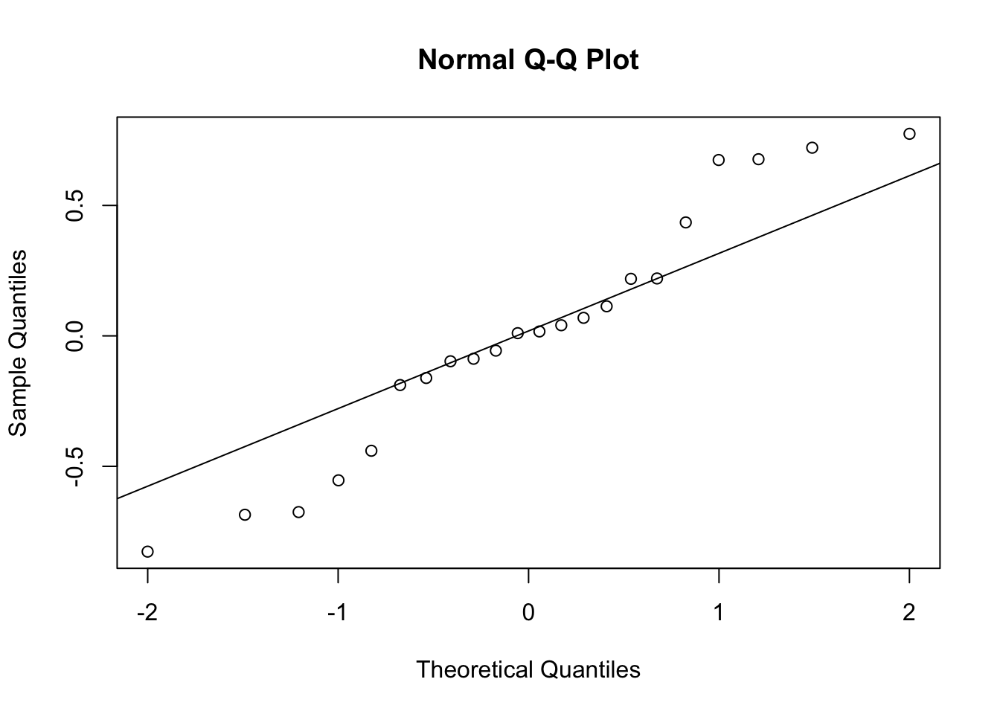
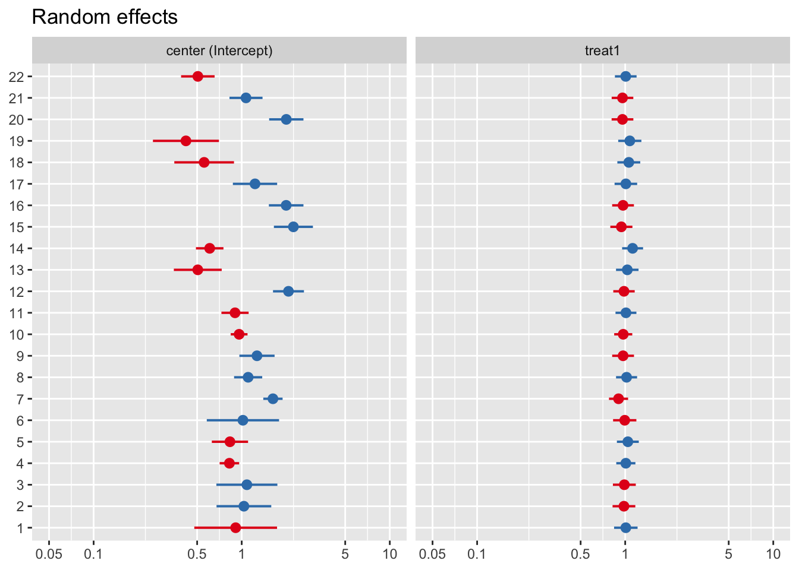
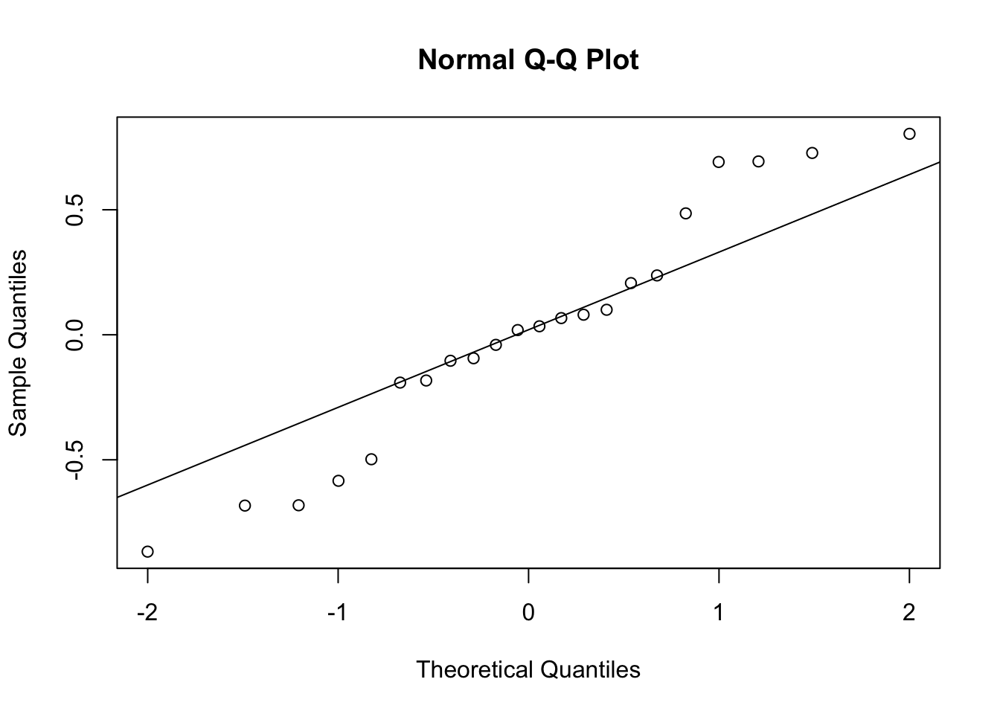
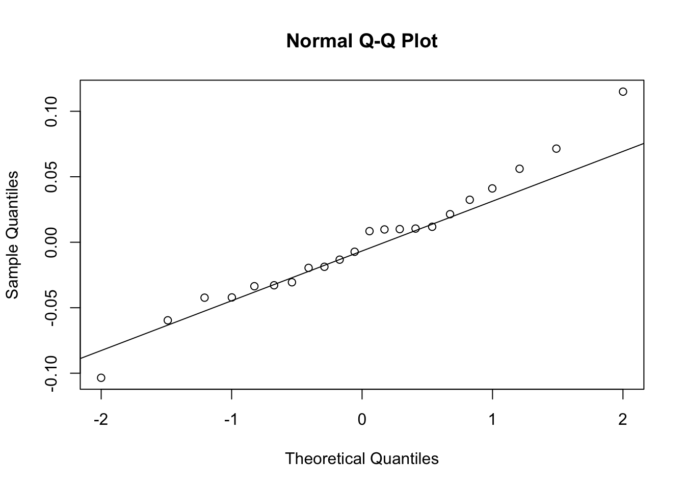

8 Multilevel Modelling Practical 8 (Week 9)
8.1 Instructions - start here!
Exercise 1 involves the analysis of the Betablocker data set used in last week’s lecture. Exercise 2 digs a little deeper using the same data set. Exercise 3 considers the Toxoplasmosis data from last week’s lab. The remaining time can be used to work on the summative assessment.
8.3 Exercise 1: Betablocker data
We will initially reproduce the analysis as demonstrated in the lecture. We read the betablocker data directly from the internet.
betablok <- read.table(
'https://andygolightly.github.io/teaching/MATH43515/betablok.dat')
head(betablok)## V1 V2
## 1 3 39
## 2 3 38
## 3 14 116
## 4 7 114
## 5 11 93
## 6 5 69Add trial and centre information:
names(betablok) <- c('r','n')
betablok$treat <- factor(gl(2,1),labels=c(0,1))
betablok$center <- gl(22,2)Let’s take a quick look at data layout:
## [1] 44 4## r n treat center
## 1 3 39 0 1
## 2 3 38 1 1
## 3 14 116 0 2
## 4 7 114 1 2
## 5 11 93 0 3
## 6 5 69 1 3We now consider the GLM fit after ignoring multi-level structure:
##
## Call:
## glm(formula = cbind(r, (n - r)) ~ treat, family = binomial, data = betablok)
##
## Coefficients:
## Estimate Std. Error z value Pr(>|z|)
## (Intercept) -2.19711 0.03359 -65.417 < 2e-16 ***
## treat1 -0.25737 0.04942 -5.207 1.91e-07 ***
## ---
## Signif. codes: 0 '***' 0.001 '**' 0.01 '*' 0.05 '.' 0.1 ' ' 1
##
## (Dispersion parameter for binomial family taken to be 1)
##
## Null deviance: 332.99 on 43 degrees of freedom
## Residual deviance: 305.76 on 42 degrees of freedom
## AIC: 527.19
##
## Number of Fisher Scoring iterations: 4Note the AIC value of 527. Recall that AIC is given by \(2(p+1)-2\log\hat{L}\) where \(\log\hat{L}\) is the maximised log-likelihood. When comparing two (potentially non-nested) models, we prefer the model with smaller AIC.
\(~\)
Now account for two-level structure, with center (i.e. hospital) in the upper level:
## Generalized linear mixed model fit by maximum likelihood (Laplace Approximation) ['glmerMod']
## Family: binomial ( logit )
## Formula: cbind(r, (n - r)) ~ treat + (1 | center)
## Data: betablok
##
## AIC BIC logLik deviance df.resid
## 324.4 329.8 -159.2 318.4 41
##
## Scaled residuals:
## Min 1Q Median 3Q Max
## -1.8876 -0.5129 0.0605 0.4969 1.8623
##
## Random effects:
## Groups Name Variance Std.Dev.
## center (Intercept) 0.2362 0.486
## Number of obs: 44, groups: center, 22
##
## Fixed effects:
## Estimate Std. Error z value Pr(>|z|)
## (Intercept) -2.19618 0.11292 -19.450 < 2e-16 ***
## treat1 -0.26091 0.04982 -5.237 1.63e-07 ***
## ---
## Signif. codes: 0 '***' 0.001 '**' 0.01 '*' 0.05 '.' 0.1 ' ' 1
##
## Correlation of Fixed Effects:
## (Intr)
## treat1 -0.205Note the AIC value of 324. Let’s think about the treatment effect. We have the following model: \[ Y_{ij} \sim \text{Binomial}(n_{ij},\pi_{ij}) \] for treatment \(i\) in center \(j\). Note that \(\pi_{ij}\) is the probability of patient mortality for that treatment-center combination. We further have via the logit link that \[ \log\left(\frac{\pi_{ij}}{1-\pi_{ij}}\right)=a+u_j+b x_{ij} \] which gives \[ \pi_{ij}= \frac{e^{a+u_j+b x_{ij}}}{1+e^{a+u_j+b x_{ij}}} \] where \(x_{ij}\) is 0 or 1 for no treatment versus treatment and \(u_j\sim N(0,\sigma^2_u)\) is the random intercept term. When \(x_{ij}=0\) the expected log-odds ratio is \[ \hat{a}=-2.2. \] When \(x_{ij}=1\), the expected log-odds ratio is \[ \hat{a}+\hat{b} = -2.2 - 0.26. \] Hence, the effect of treatment is the change the log-odds ratio by -0.26 and therefore multiplys the odds-ratio (in favour of death) by \(\exp(-0.26)=0.77\). That is, the treatment appears to be effective in reducing probability of patient mortality.
This observation has also been made in the literature; e.g. Aitkin et al (2009, Statistical Modelling in R, page 526), note: “The treatment produces a significant, though small, reduction in death risk compared to the control: the odds of death are reduced…”.
\(~\)
We can do a little diagnostc checking by looking at the normality assumption for the random intercept terms:

which doesn’t look too bad given the size of the data set.
8.4 Exercise 2 (digging deeper)
This is a multi-centre trial, so (in terms of analysis) comparable to a multi-site trial. Hence, a natural extension of the preceding analysis would be the consideration of random slopes.
Adapt the model betablok.glmer accordingly so that it allows for centre-specific slopes.
## Generalized linear mixed model fit by maximum likelihood (Laplace Approximation) ['glmerMod']
## Family: binomial ( logit )
## Formula: cbind(r, (n - r)) ~ treat + (treat | center)
## Data: betablok
##
## AIC BIC logLik deviance df.resid
## 327.7 336.6 -158.8 317.7 39
##
## Scaled residuals:
## Min 1Q Median 3Q Max
## -1.45612 -0.40887 0.02525 0.44137 1.39542
##
## Random effects:
## Groups Name Variance Std.Dev. Corr
## center (Intercept) 0.254613 0.5046
## treat1 0.009585 0.0979 -0.45
## Number of obs: 44, groups: center, 22
##
## Fixed effects:
## Estimate Std. Error z value Pr(>|z|)
## (Intercept) -2.20413 0.11749 -18.760 < 2e-16 ***
## treat1 -0.24681 0.05888 -4.192 2.77e-05 ***
## ---
## Signif. codes: 0 '***' 0.001 '**' 0.01 '*' 0.05 '.' 0.1 ' ' 1
##
## Correlation of Fixed Effects:
## (Intr)
## treat1 -0.364TASK: Consider AIC. Do the random slopes appear to be worth including?
Click for solution
The AIC is 327.7, which has increased (from 324.4 for the random intercept model). Hence, it appears that random slopes are not needed.\(~\)
TASK: Apply the anova function on the pair of models to endorse your judgement. (Note: both models are fitted using maximum likelihood so using anova here is perfectly acceptible. We used ranova to compare models with and without random slopes in the linear mixed effect model setting due to lmer using restricted maximum likelihood to perform the fitting.)
Click for solution
## Data: betablok
## Models:
## betablok.glmer: cbind(r, (n - r)) ~ treat + (1 | center)
## betablok.glmer2: cbind(r, (n - r)) ~ treat + (treat | center)
## npar AIC BIC logLik deviance Chisq Df Pr(>Chisq)
## betablok.glmer 3 324.42 329.77 -159.21 318.42
## betablok.glmer2 5 327.65 336.58 -158.83 317.65 0.7661 2 0.6818\(~\)
Inspect the random intercept and slope values for betablok.glmer2 (using plot_model):

What can you say about the random treatment slopes?
\(~\)
Let’s do some additional diagnostic checking for the random intercept and slope model. Start with diagnostics for the random effects:
qqnorm(ranef(betablok.glmer2)$center[[1]]) #random intercepts
qqline(ranef(betablok.glmer2)$center[[1]])
qqnorm(ranef(betablok.glmer2)$center[[2]]) #random slopes
qqline(ranef(betablok.glmer2)$center[[2]])
TASK: What is your overall conclusion?
Click for solution
Including random slopes does not seem worthwhile. This conclusion is supported by AIC, the likelihood ratio test and the plot of the fitted random slope effects (which are very similar, suggesting very small variance).
Overall, the combined studies point towards a small reduction of death risk due to the use betablockers.\(~\)
8.5 Exercise 3 (optional): Toxoplasmosis data revisited
We revisit the Toxoplasmosis (rainfall) data from the previous practical. We load and prepare the data frame as previously.
We had fitted the following two logistic models, and identified some superiority of the cubic over the linear moodel.
toxo.glm <- glm(cbind(Cases,Total-Cases) ~ x,
family=binomial(link=logit), data=rainfall)
summary(toxo.glm)##
## Call:
## glm(formula = cbind(Cases, Total - Cases) ~ x, family = binomial(link = logit),
## data = rainfall)
##
## Coefficients:
## Estimate Std. Error z value Pr(>|z|)
## (Intercept) 0.3424 0.8522 0.402 0.688
## x -0.1562 0.4428 -0.353 0.724
##
## (Dispersion parameter for binomial family taken to be 1)
##
## Null deviance: 74.212 on 33 degrees of freedom
## Residual deviance: 74.087 on 32 degrees of freedom
## AIC: 168.78
##
## Number of Fisher Scoring iterations: 3toxo3.glm <- glm(cbind(Cases,Total-Cases) ~ x+I(x^2)+I(x^3),
family=binomial(link=logit), data=rainfall)
summary(toxo3.glm)##
## Call:
## glm(formula = cbind(Cases, Total - Cases) ~ x + I(x^2) + I(x^3),
## family = binomial(link = logit), data = rainfall)
##
## Coefficients:
## Estimate Std. Error z value Pr(>|z|)
## (Intercept) -290.17 87.22 -3.327 0.000878 ***
## x 449.98 134.70 3.341 0.000836 ***
## I(x^2) -231.13 69.03 -3.348 0.000813 ***
## I(x^3) 39.32 11.74 3.351 0.000806 ***
## ---
## Signif. codes: 0 '***' 0.001 '**' 0.01 '*' 0.05 '.' 0.1 ' ' 1
##
## (Dispersion parameter for binomial family taken to be 1)
##
## Null deviance: 74.212 on 33 degrees of freedom
## Residual deviance: 62.635 on 30 degrees of freedom
## AIC: 161.33
##
## Number of Fisher Scoring iterations: 3Endorse this result by applying anova onto this pair of models:
## Analysis of Deviance Table
##
## Model 1: cbind(Cases, Total - Cases) ~ x
## Model 2: cbind(Cases, Total - Cases) ~ x + I(x^2) + I(x^3)
## Resid. Df Resid. Dev Df Deviance Pr(>Chi)
## 1 32 74.087
## 2 30 62.635 2 11.453 0.003259 **
## ---
## Signif. codes: 0 '***' 0.001 '**' 0.01 '*' 0.05 '.' 0.1 ' ' 1In the previous practical we already expressed some suspicion about the relevance of the cubic term: While statistically significant, is it “really there”, or are we “overfitting” a random feature of this data?
In this connection it is worth recalling a basic feature of the Binomial model: It is a one-parameter distribution, with a fixed mean-variance relationship (just as the Poisson model, but unlike the Normal or Gamma model) and with no scale parameter to absorb “excess variability”. If the data possess more inherent variability than this rigid mean-relationship allows, one speaks of “overdispersion”.
It turns out that one way of addressing this problem is two consider the data set “artificially” as a two-level model, i.e. to introduce a random effect for the “upper level” which however coincides with the observation index (Aitkin et al, Statistical Modelling in R, page Sec 8.4.3.). That is, each observation gets assigned its own random effect, which then can absorb the excess variation. Create a vector of observation ID’s,
and then fit an “empty” model only containing the random effect for the IDs, that is (1|D).
toxo.glmm3 <- glmer(cbind(Cases,Total-Cases) ~ (1|ID),
family=binomial, data=rainfall)
summary(toxo.glmm3)## Generalized linear mixed model fit by maximum likelihood (Laplace Approximation) ['glmerMod']
## Family: binomial ( logit )
## Formula: cbind(Cases, Total - Cases) ~ (1 | ID)
## Data: rainfall
##
## AIC BIC logLik deviance df.resid
## 154.6 157.7 -75.3 150.6 32
##
## Scaled residuals:
## Min 1Q Median 3Q Max
## -1.26132 -0.82407 -0.04503 0.40309 1.32907
##
## Random effects:
## Groups Name Variance Std.Dev.
## ID (Intercept) 0.2634 0.5132
## Number of obs: 34, groups: ID, 34
##
## Fixed effects:
## Estimate Std. Error z value Pr(>|z|)
## (Intercept) -0.1229 0.1381 -0.89 0.374We see that this model leads to a lower AIC than any of the models considered previously!
We conclude that there is no actual dependency of toxoplasmosis rates on rainfall, and that the observed cubic trend has been due to unexplained excess variability (=overdispersion).
\(~\)